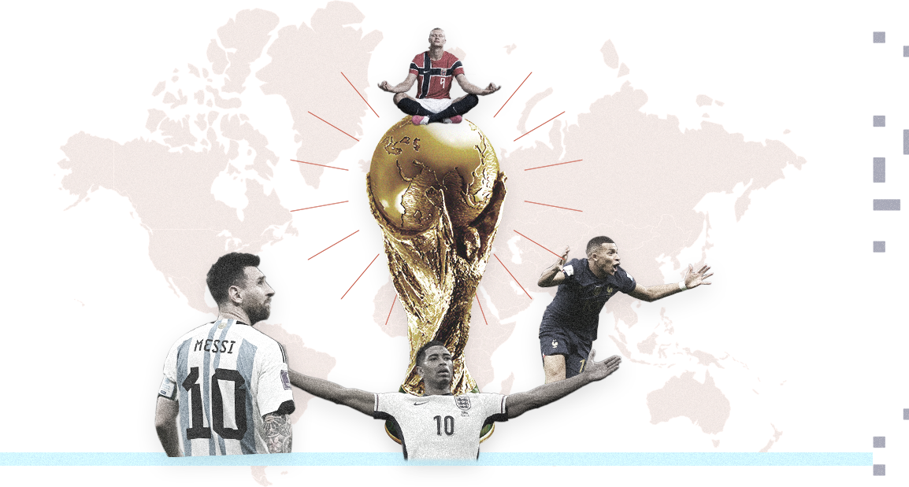
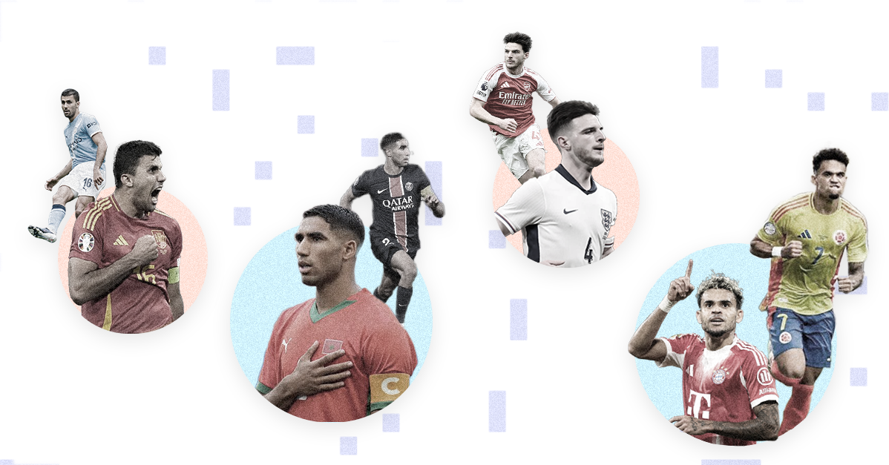
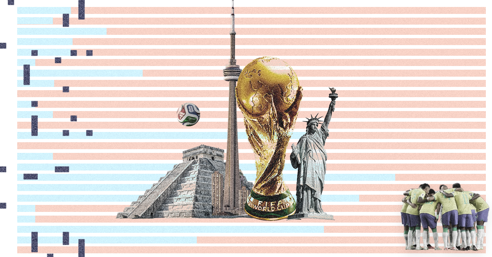
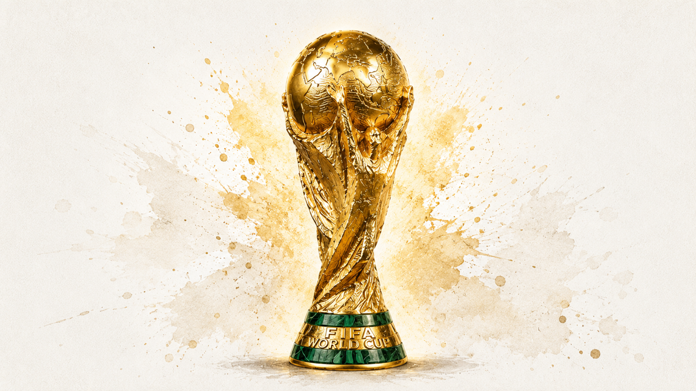

The upcoming edition of the FIFA World Cup will be unlike anything we have seen before. Literally. With 48 nations in competition, it comes across as the largest tournament in history, spanning across three host nations and featuring 1,246 players. All in it with one goal:
World Champion.

When the tournament kicks off, players will come from 449 different clubs across 69 professional leagues in 71 countries. But not every league, nor club, will contribute equally.
From the the world's top five leagues in 2025, according to the International Federation of Football History and Statistics (IFFHS) (English Premier League, La Liga, Brazil's Brasileirão, Serie A and the Bundesliga), the English Premier League dominates the numbers with 200 players. Nearly one in six of everyone at the tournament.
German Bundesliga follows with 108, roughly half as many. French Ligue 1 and Spanish La Liga, sit a little further back with 86 each. Italy Serie A, closes out the European podium with 71; while the Brasileirão adds 32.
Beyond the traditional power-house leagues, others have also emerged. With time and heavy investment, the Saudi Pro League (49) and Major League Soccer (48) have established themselves as suppliers of talent. They are attractive destinations for emerging players and for those looking for a different competition pace.
Looking closer at Europe's four major leagues, there's no surprise that the big clubs, with their diverse squads, lead the way. Manchester City supplies 19 players and Bayern Munich 18. Between them, they feed more than 25 national teams. Paris Saint-Germain and Arsenal follow closely (16 each), then Barcelona (15).
With diverse nationalities in these squads, there’s a real chance that when Germany faces Spain, or England takes on Brazil, many of the players squaring off on the pitch are teammates at club level, week in, week out.

One of the most revealing statistics in any World Cup squad is the split between players competing in their domestic league and those who play abroad. It says something about the strength and the pull of a country's football pyramid.
For some nations, the best players (or simply players) never had to “leave” in search of competition. That is the case for England, Germany and Spain squads: players who play in their country, for their country. Others countries have to search six continents to find their team.
On one side are Saudi Arabia and Qatar, where 96% of both squads play at home. This could be a result of the investment that has kept, and attracted, talent to their leagues. England (81%) and Germany (73%) are similar with their local leagues simply being among the best in the world.
At the other end, six nations send 100% of their squad from clubs abroad: Cape Verde, Curaçao, DR Congo, Ivory Coast, Senegal and Uruguay. Players like Sadio Mané in Saudi Arabia, Franck Kessié at Al-Ahli and Federico Valverde at Real Madrid, sit on in this side of the spectrum.
Ninety-six years. Twenty-three editions, and now, for the first time, the World Cup is bigger than anyone imagined it could be. Forty-eight nations take the world stage, each with a story of its own about how its squad, league and clubs are built.
Some will arrive as heavy favourites. Others already know what it is to be on the big stage, and many debutants will be hungry to make a name for themselves.

© 2026